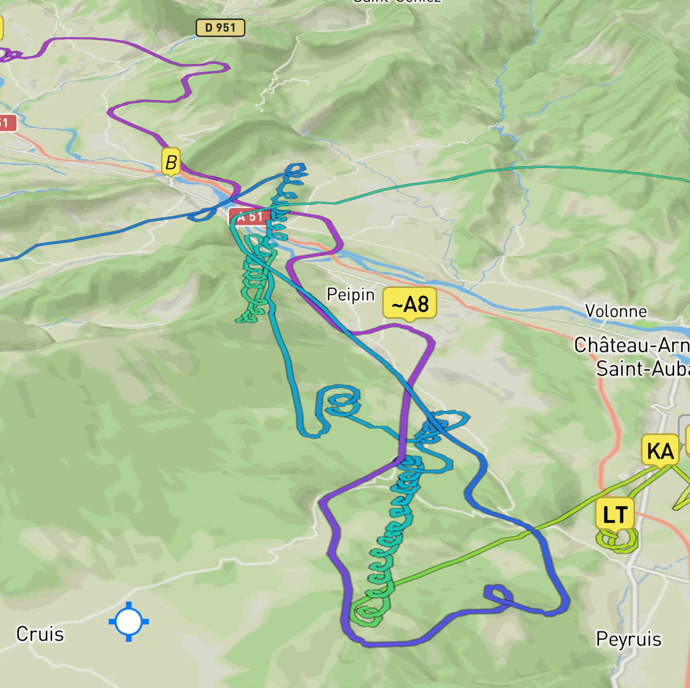
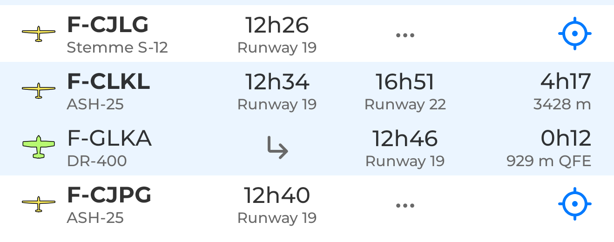
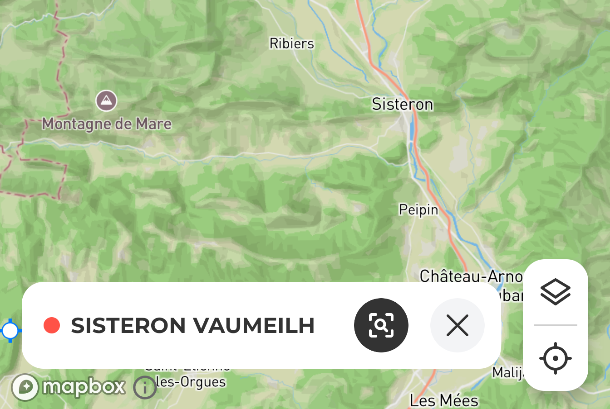
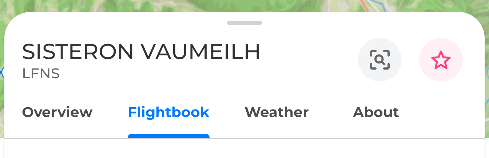
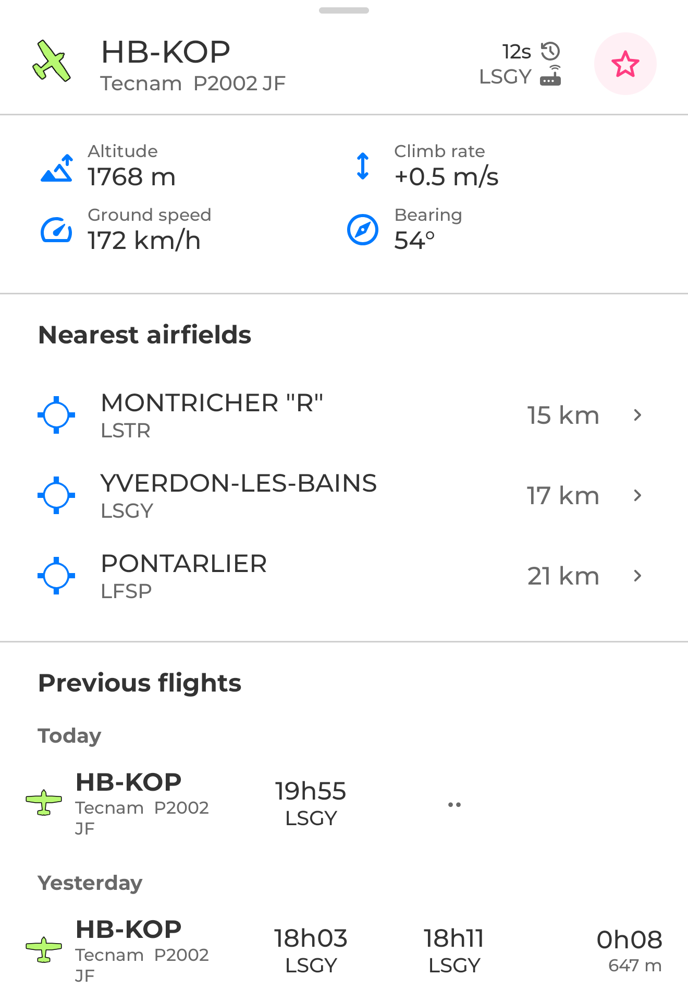
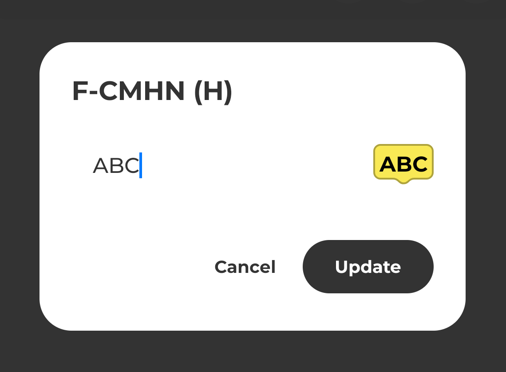
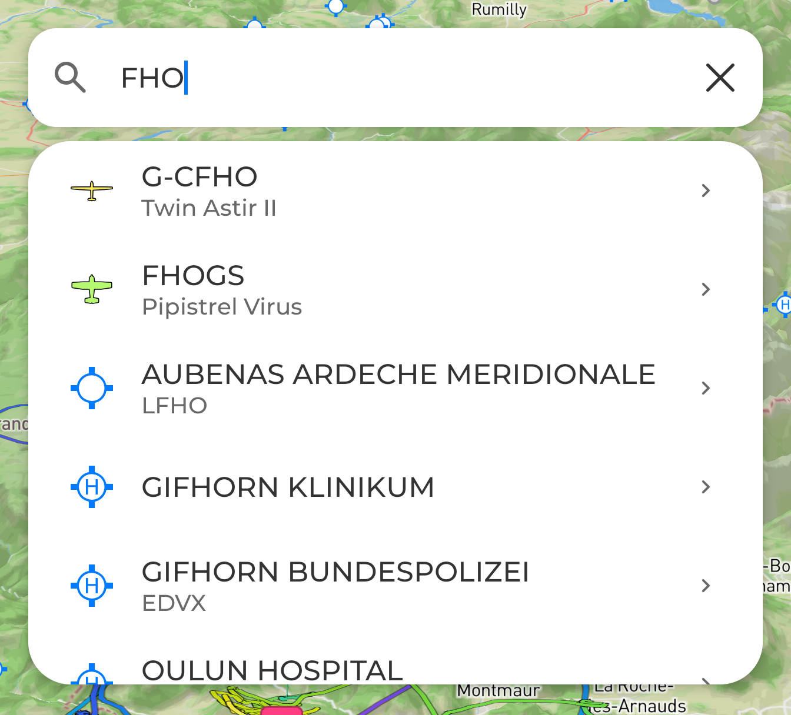

Flight trails in 3D, and in color
Admire the beautiful spirals in thermals, the real 3D terrain, and compare the altitudes of different gliders in flight, live. See how flights unfold at a glance.

New flight logs, for ALL airfields
Flight-log detection has been rebuilt from scratch to be as accurate as possible and to handle every airfield and aerodrome in Mistral (the old version only worked with airfields that had an ICAO code).

Filter the map to an airfield's fleet
Tap an airfield on the map to focus the view on just its fleet, and open its flight log, weather and details from one place.


Flight log per glider/aircraft
You can now see an aircraft's flight history directly by selecting it on the map.

Nearby airfields
When you select an aircraft on the map, the 3 nearest aerodromes are shown with their distance from the glider — a quick way to weigh your options if conditions worsen.
Custom marker labels for your bookmarks
Give a bookmarked aircraft a short custom label that shows right on its map marker.

Support for new trackers
WeGlide, Puretrack, Wingman and Volandoo aircraft are now supported by Mistral, in addition to those already supported (Microtrak, Fanet, Naviter, SafeSky, FlyMaster, Pilot Aware, etc.)
Search is now available
Find any aircraft, airfield or receiver in seconds with the new search bar — included in this release.

Other ideas or feedback?
Feel free to write to us via the chat in the settings, or by email at hello@mistralgliders.com.